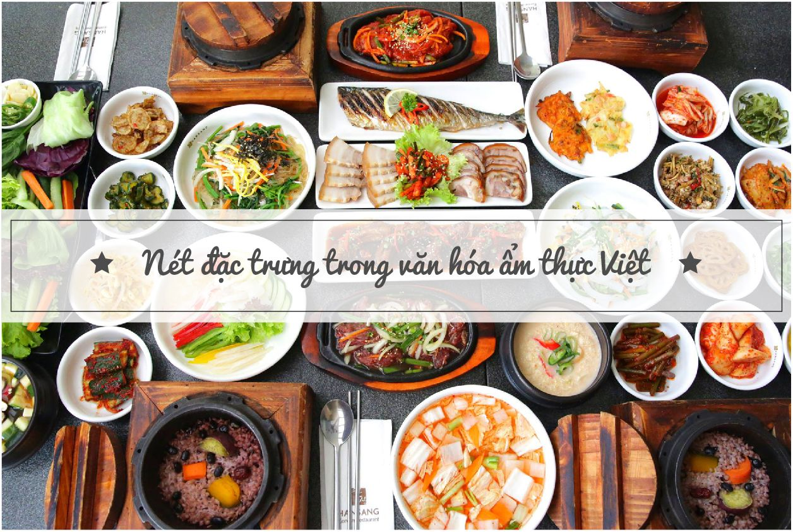
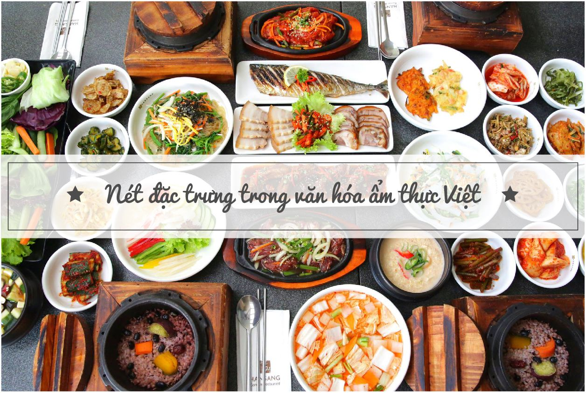
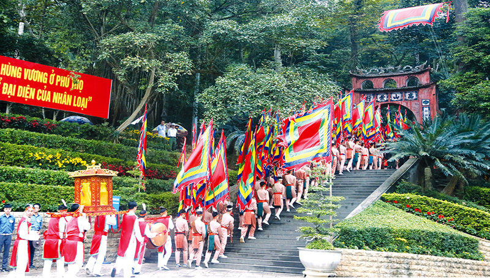
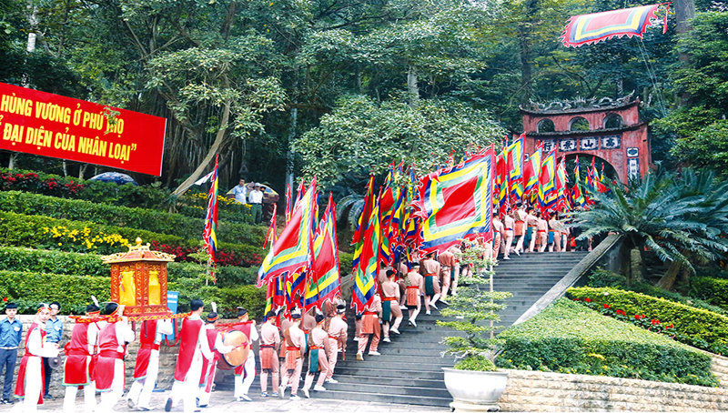

Nét đặc trưng của văn hóa và ẩm thực Việt Nam:
Văn hóa và ẩm thực Việt Nam mang đậm bản sắc dân tộc, thể hiện rõ nét trong đời sống hằng ngày của người dân. Việt Nam có nền văn hóa lâu đời, chịu ảnh hưởng của nhiều vùng miền, mỗi nơi lại có những phong tục, tập quán và lễ hội riêng tạo nên sự đa dạng và phong phú. Ẩm thực Việt Nam nổi tiếng với sự hài hòa giữa các hương vị chua, cay, mặn, ngọt và cách chế biến tinh tế. Những món ăn như phở, bún chả, gỏi cuốn hay bánh mì đã trở thành biểu tượng, được bạn bè quốc tế yêu thích. Không chỉ ngon miệng, các món ăn Việt còn thể hiện tinh thần sáng tạo, giản dị và gần gũi với thiên nhiên.
 

 

Văn hóa tinh thần của người Việt trong ẩm thực chính là sự thể hiện nét đẹp trong văn hóa giao tiếp, là sự cư xử giữa người với người trong bữa ăn, làm vui lòng nhau qua thái độ ứng xử lịch lãm, có giáo dục. Việc ăn uống đều có những phép tắc, lề lối riêng, từ bản thân, đến trong gia đình, rồi các mối quan hệ ngoài xã hội. Bản thân mỗi người phải biết giữ gìn, thận trọng trong khi ăn, cũng như đề cao danh dự của mình: “ăn trông nồi, ngồi trông hướng”, hay “ăn phải nhai, nói phải nghĩ. Trong gia đình: ăn chung mâm, ưu tiên thức ăn ngon cho người lớn tuổi, trẻ nhỏ”kính trên nhường dưới”, thể hiện sự kính trọng, tình cảm yêu thương. Bữa cơm hàng ngày được xem là bữa cơm xum họp gia đình, mọi người quây quần bên nhau, cùng nhau vui vầy sau một ngày làm việc mệt nhọc. Ngoài xã hội: việc mời khách đến nhà thể hiện nét văn hóa giữa người với người trong xã hội. Khi có dịp tổ chức ăn uống, gia chủ thường làm những món ăn thật ngon, nấu thật nhiều để đãi khách. Chủ nhà thường gắp thức ăn mời khách, tránh việc dừng đũa trước khách, và có lời mời ăn thêm khi khách dừng bữa. Bữa cơm thiết không chỉ đơn thuần là cuộc vui mà còn thể hiện tấm lòng hiếu khách đặc trưng của người Việt. Ẩm thực Việt Nam là một bức tranh đầy màu sắc, nêu bật lên bản sắc riêng của từng dân tộc, vùng miền nhưng chúng vẫn mang trong mình cốt cách, linh hồn Việt đồng nhất. Đậm đà vị dân tộc không thể xóa nhòa.